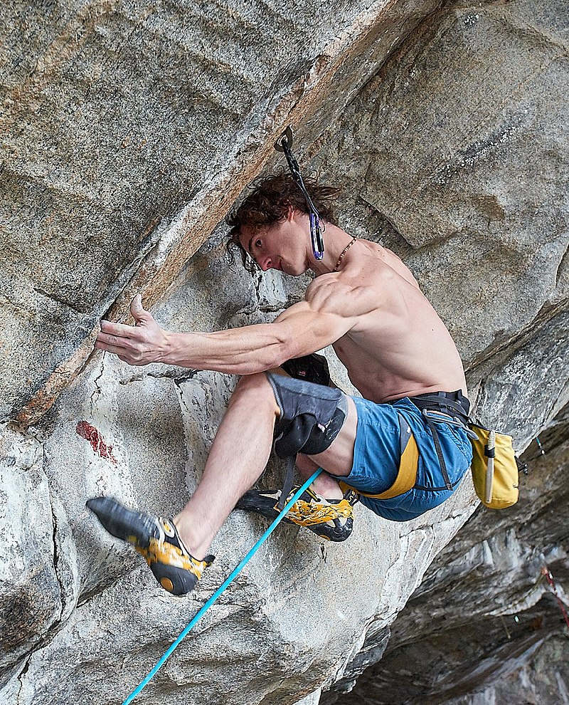
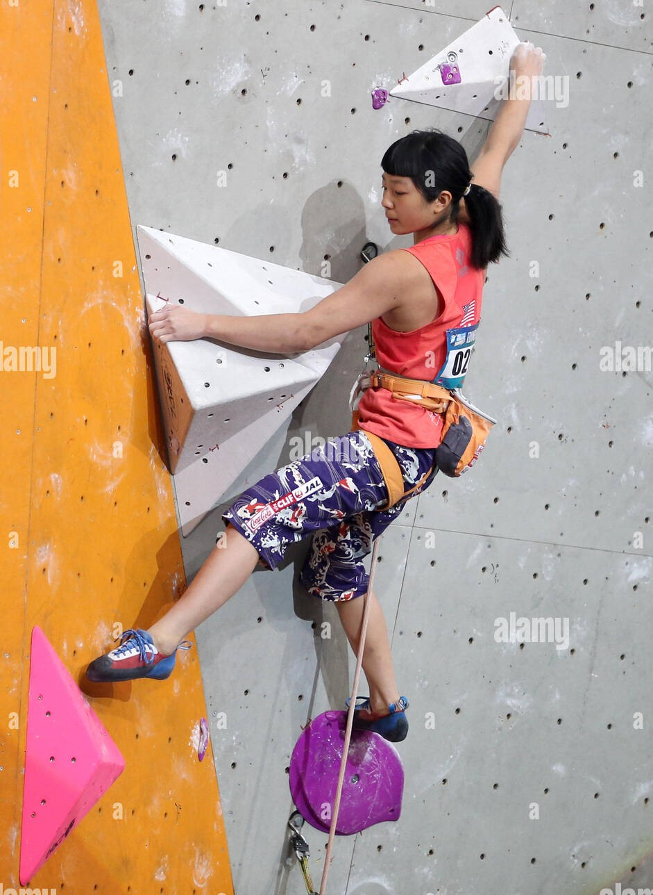
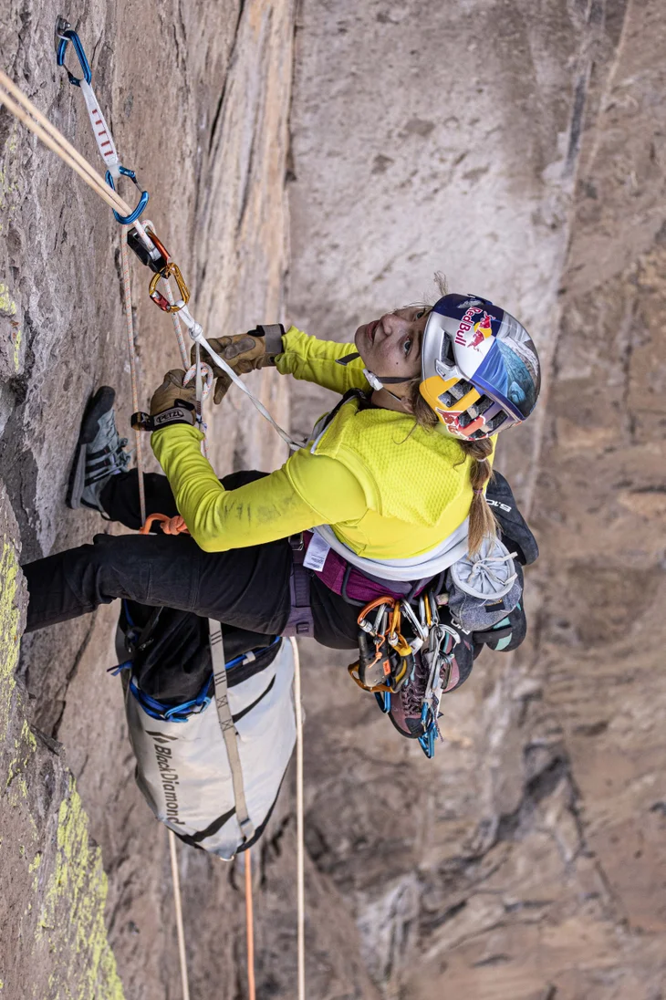
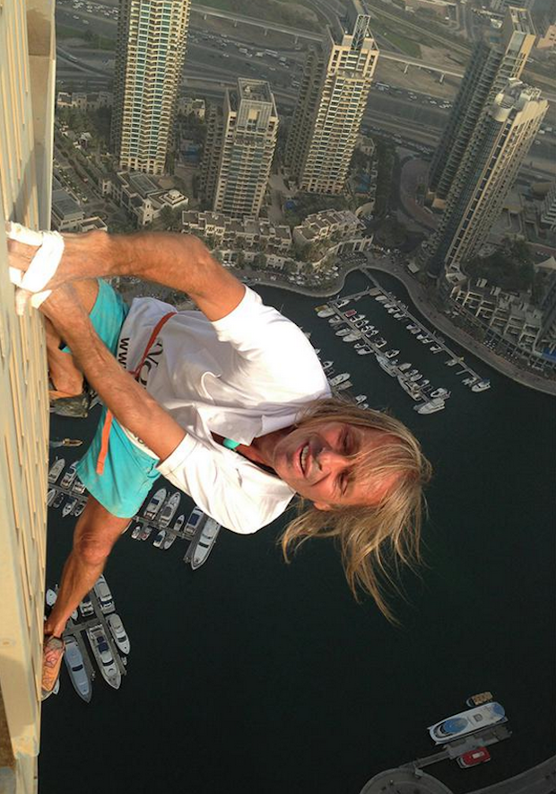
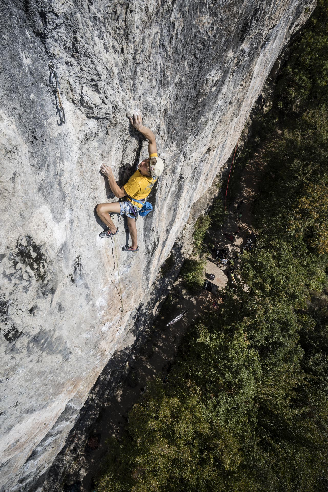

Adam Ondra
- Date de naissance : 5 février 1993
- Lieu de naissance : Brno, République Tchèque
- Spécialité : Escalade sportive / Bloc
- Voies remarquables : "Silence" à Flatanger en Norvège en 2017. Soit la voie la plus difficile de l’histoire (cotée 9c mais encore à confirmer).
- Citations : "Parfois, je me sens presque comme un Lego. C’est comme si mes mains et mes jambes étaient commandées par une autre personne. Je ne fais que les observer évoluer."

Alex Honnold
- Date de naissance : 17 août 1985
- Lieu de naissance : Sacramento, États-Unis
- Spécialité : Solo intégral / Vitesse
- Voies remarquables : Première ascension en solo intégral sur El Capitan (2017)
- Citations : "Je ne monte pas vraiment vite, c’est juste que je ne me fatigue pas et que je ne ralentis pas. Plus vous approchez de vos limites physiques, plus il devient difficile de continuer à s’améliorer. Cela nécessite un certain investissement et beaucoup de concentration."

Ashima Shiraishi
- Date de naissance : 3 avril 2001
- Lieu de naissance : New-York, Etats-Unis
- Spécialité : Escalade sportive
- Voies remarquables : "Open Your Mind Direct" et "Ciudad de Dios" à Santa Linya, en Espagne en 2015. Plus jeune grimpeuse à avoir réussi une voie cotée 9a/9a+.
- Citations : "Si vous ne vous amusez pas quand vous grimpez, vous serez stressé et vous douterez de vous-même. Je veux aider les autres à faire ce qu’ils aiment vraiment."

Sasha DiGiulian
- Date de naissance : 23 octobre 1992
- Lieu de naissance : Alexandria, Etats-Unis
- Spécialité : Escalade sportive / Pluridisciplinaire
- Voies remarquables : Mora Mora à Madagascar, la première ascension féminine en 2017
- Citations : "Je suis une personne optimiste. Même si je tombe sur une voie, il y a peu de jours où l’escalade me rend de mauvaise humeur. Finalement, c’est simplement un jeu.."

Alain Robert
- Date de naissance : 7 août 1962
- Lieu de naissance : Digoin, France
- Spécialité : solo intégral dans les villes
- Voies remarquables : Burj Khalifa à Dubaï, la première ascension de la tour la plus haute du monde en 2011.
- Citations : "Quand j’ai commencé à grimper en solo intégral, je savais que j’avais enfin trouvé ma voie. Un sentiment de solitude apaisante, mêlé à l’anxiété de se retrouver à ces hauteurs, pris entre la vie et la mort."

Alexandre Megos
- Date de naissance : 12 août 1993
- Lieu de naissance : Erlangen, Allemagne
- Spécialité : Escalade sportive / Bloc
- Voies remarquables : Estado Critico à Siuran en Espagne. Premier grimpeur à avoir enchaîné un 9a à vue.
- Citations : "Vous n'échouez pas pas parce que c’était trop glissant, qu’il faisait trop chaud ou quoi que ce soit. Vous échouez parce que vous êtes trop limités."